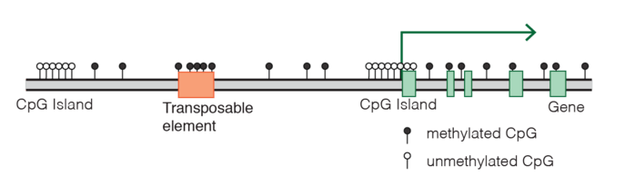

stateDiagram-v2
[*] --> NonCpG
state "Non-CpG" as NonCpG
state "CpG Island" as CpG
NonCpG --> NonCpG : p = 0.999
NonCpG --> CpG : p = 0.001
CpG --> CpG : p = 0.995
CpG --> NonCpG : p = 0.005
note right of NonCpG
**Emission Probabilities:**
A: 0.30
C: 0.20
G: 0.20
T: 0.30
end note
note left of CpG
**Emission Probabilities:**
A: 0.15
C: 0.35
G: 0.35
T: 0.15
end note
Скрытые Марковские модели
Введение
HMM (Hidden Markov Models, Скрытые Марковские модели) – это мощные статистические методы, позволяющие моделировать биологические последовательности и выявлять скрытые стохастические процессы, которые управляют их формированием.

В биоинформатике HMM используются для анализа последовательностей, предсказания генов и обнаружения мотивов. Они особенно полезны в задачах, связанных с последовательными данными, где скрытые состояния (такие как, например, кодирующие и некодирующие регионы) оказывают влияние на наблюдаемые события (например, нуклеотидные последовательности).
HMM широко применяются для предсказания генов, помогая определить кодирующие участки ДНК и, таким образом, позволяют продолжить изучение структуры и функции генов. Они также используются в множественном выравнивании последовательностей, что помогает сопоставлять родственные последовательности и изучать эволюционные взаимосвязи.

Практическое задание
Данное практическое занятие будет посвящено применению HMM для поиска CpG-островков в геноме.
Как подготовить HMM?
Марковская модель описывает систему, которая переходит из одного состояния в другое, причем каждый переход зависит исключительно от текущего состояния (т.н. марковское свойство). Это означает, что будущее состояние системы определяется только ее текущим состоянием, а не всей предшествующей последовательностью событий.
Ключевые параметры для настройки модели:
Состояния: Определите различные состояния, которые система может занимать.
Вероятности переходов: Укажите вероятности перехода из одного состояния в другое. Эти вероятности должны суммироваться до 1 для любого состояния, отражая все возможные пути, которые система может выбрать.
Начальные вероятности состояний: Задайте вероятности для того, чтобы система начала с определенного состояния. Эти вероятности используются для инициализации модели в начале последовательности.
Предисловие
Что такое CpG-островки?
CpG-островки — это специфические участки ДНК с высокой частотой сочетаний цитозина и гуанина (обозначаемых как CpG), которые играют важную роль в регуляции генов. Эти островки часто располагаются рядом с промоторами — участками, ответственными за запуск транскрипции генов, — особенно в геномах эукариот.

Одной из ключевых особенностей CpG-островков в промоторных областях является то, что они обычно остаются неметилированными, что способствует активной экспрессии гена. Напротив, их метилирование может приводить к «выключению» гена, подавляя его активность. Поэтому состояние CpG-островков — метилированное или неметилированное — становится своего рода переключателем, который помогает регулировать, будет ли ген экспрессироваться или нет.

Алгоритм Витерби (reminder)
Алгоритм Витерби — это метод динамического программирования, который позволяет определить наиболее вероятную последовательность скрытых состояний в скрытой марковской модели (HMM) для данной последовательности наблюдаемых событий. Алгоритм вычисляет путь, который максимизирует вероятность наблюдаемой последовательности, путем итеративного расчета наивысшей вероятности для каждого состояния на каждом этапе. При этом сохраняется информация как о вероятностях, так и о «указателях» (backpointer), необходимых для восстановления оптимального пути по завершении расчетов. Благодаря рекурсивному подходу алгоритм эффективно отслеживает путь, ведущий к каждому состоянию, избегая необходимости полного перебора всех возможных путей.
Почему выбран алгоритм Витерби для данной задачи? Алгоритм Витерби особенно подходит для выявления CpG-островков в последовательностях ДНК, так как он позволяет точно расшифровать последовательность в разные состояния (например, «CpG-островок» и «не-CpG-островок») на основе HMM. Высокая вычислительная эффективность делает его идеальным инструментом для анализа длинных последовательностей ДНК, типичных для биоинформатических исследований. Определяя наиболее вероятную последовательность скрытых состояний, алгоритм помогает выявлять биологически значимые области с высоким содержанием CG, что связано с функциями регуляции генов.
Aлгоритм Витерби находит широкое применение в различных областях биоинформатики и вычислительной биологии. Например, он используется для предсказания генов, помогая определить расположение экзонов и интронов в геномной последовательности. Алгоритм также применяется в множественном выравнивании последовательностей, где он помогает выровнять родственные биологические последовательности и выявить консервативные регионы. За пределами биоинформатики алгоритм Витерби также используется в системах распознавания речи, языковом моделировании и робототехнике для определения наиболее вероятной последовательности состояний в различных марковских системах.
Как подготовить HMM. Частный случай.
Состояния: В этой HMM предусмотрены два состояния — «CpG-островок» и «не-CpG-островок». Состояние CpG-островка представляет области генома с высокой частотой цитозин-гуаниновых динуклеотидов (CG), тогда как состояние не-CpG-островка охватывает стандартные участки генома с низким содержанием CG.
Вероятности перехода: Вероятности перехода между состояниями определяют, какова вероятность перемещения из одного состояния в другое. Например, вероятность остаться в состоянии CpG-островка может быть высокой, что отражает их цельный, локализованный характер. В то же время вероятность перехода из состояния «не-CpG-островок» в «CpG-островок» может быть ниже, так как CpG-островки обычно сконцентрированы в определенных участках генома, часто около промоторных регионов генов.
Вероятности эмиссии: Вероятности эмиссии описывают вероятность наблюдения конкретных нуклеотидов (A, C, G, T) в каждом состоянии. Для CpG-островков характерна более высокая вероятность появления нуклеотидов C и G, что отражает их уникальный состав, тогда как в не-CpG-областях эти вероятности распределены более равномерно.
Моделирование CpG-островков: Параметры HMM — состояния, вероятности переходов и вероятности эмиссии — создают модель, способную распознать CpG-островки на основе их биологических особенностей, таких как высокое содержание CG и их расположение вблизи промоторных областей. Таким образом, модель не только различает CpG и не-CpG участки, но и выделяет те, что с наибольшей вероятностью играют роль в регуляции генов.
Графическое представление: Визуальная схема HMM наглядно отображает модель. В ней состояния представлены узлами, а переходы между ними — стрелками с указанием вероятностей. Такой граф помогает представить, как система переходит между состояниями и в какой последовательности.
Имплементация алгоритма
Инициализация матрицы Витерби При работе с алгоритмом Витерби первым шагом является инициализация матрицы, в которой будут храниться вероятности наиболее вероятных путей для каждого состояния на каждом шаге последовательности. Эта матрица позволяет моделировать вероятностный путь через последовательность ДНК, учитывая наиболее вероятные переходы между состояниями.
Итерация по последовательности В процессе итерации по последовательности ДНК, шаг за шагом, вычисляется вероятность нахождения в каждом из возможных состояний (например, «CpG-островок» или «не-CpG-островок») на каждом этапе последовательности. Этот шаг позволяет постепенно накапливать вероятности, связанные с каждым состоянием в последовательности.
Построение и использование матрицы Витерби Создание матрицы Витерби (V): Эта матрица (V) используется для хранения максимальной вероятности достижения каждого состояния в каждый момент последовательности. Дополнительно создается матрица указателей (backpointer), которая сохраняет наиболее вероятное предыдущее состояние для каждого текущего состояния, что будет полезно на этапе определения пути.
Выбор конечного состояния: В последней колонке матрицы V определяется состояние с наивысшей вероятностью, которое считается конечной точкой на наиболее вероятном пути.
Обратный проход (backtracking): Начиная с выбранного конечного состояния, матрица указателей используется для «обратного прохода» через последовательность, чтобы восстановить наиболее вероятный путь скрытых состояний. Этот процесс позволяет точно определить участки, такие как CpG-островки, в анализируемой последовательности.
Пример имплементации алгоритма (псевдокод)
# --------------------- Initial model setup ---------------
# Define states and observations
states = ['CpG', 'Non-CpG']
observations = ['A', 'T', 'G', 'C']
map_state_to_index = {CpG: 0, Non-CpG: 1}
map_obs_to_index = {A: 0, T: 1, G: 2, C: 3}
# Define transition probability matrix between states
transition_probabilities = [
# Complete this part yourself for each state
]
# Define emission probability matrix from states to
# observations
emission_probabilities = [
# Complete this part yourself for each state
]
# --------------------- Reading setup ---------------------
# Observed sequence (e.g., 'Obs1', 'Obs2', ...)
observed_sequence = read sequence
# Convert observed sequence to indices
observed_index_sequence = [map_obs_to_index[obs] for obs in observed_sequence]
# Initialize parameters for Viterbi algorithm
number_of_states = length of states
sequence_length = length of observed_sequence
# Viterbi matrix to store highest probabilities
Viterbi_matrix = matrix of zeros with dimensions (number_of_states, sequence_length)
# Backpointer matrix to store best paths
backpointer_matrix = matrix of zeros (integer type) with dimensions (number_of_states, sequence_length)
# --------------------- Applying model --------------------
# Initialization step: Populate the first column of Viterbi
# and backpointer matrices
for each state s:
Viterbi_matrix[s, 0] = emission_probabilities[s][observed_index_sequence[0]]
backpointer_matrix[s, 0] = 0
# Iteration over each position in observed sequence
for each position t from 1 to sequence_length - 1:
for each state s:
# Calculate maximum probability of reaching state
# s from previous states
transition_probs = [Viterbi_matrix[prev_state, t - 1] * transition_probabilities[prev_state][s]
for each previous state]
max_transition_prob = maximum value of transition_probs
Viterbi_matrix[s, t] = max_transition_prob * emission_probabilities[s][observed_index_sequence[t]]
backpointer_matrix[s, t] = index of max_transition_prob
# Termination step: Identify best last state
last_state = index of maximum value in last column of Viterbi_matrix
best_path = [last_state]
# Backtrack to construct the optimal state path
for each position t from sequence_length - 1 down to 1:
last_state = backpointer_matrix[last_state][t]
append last_state to best_path
# Reverse best_path to get the correct order
best_path = reverse of best_path
# --------------------- Finishing -------------------------
# Map indices in best_path back to state names
most_probable_states = [
states[state_index] for each state_index in best_path
]
# Output the result
print("Most probable sequence of states:")
print(most_probable_states)Домашнее задание
Цель
Научиться применять скрытую марковскую модель (HMM) для обнаружения CpG-островков в последовательности ДНК, закрепив теоретические знания, полученные на занятиях.
Задачи
Определение модели: Задайте HMM с двумя состояниями («CpG» и «не-CpG»), указав разумные начальные значения для вероятностей переходов и эмиссий.
Реализация алгоритма: Реализуйте алгоритм Витерби на Python для поиска CpG-островков в длинной последовательности ДНК. Этот этап опирается на материал, изученный на занятии, где вы узнали, как применять алгоритм Витерби для нахождения наиболее вероятной последовательности состояний. Теперь ваша задача — применить эти знания к большему и более сложному набору данных.
Обучение алгоритмом Баум-Велша: Реализуйте алгоритм Баум-Велша для уточнения параметров модели. Этот алгоритм выбран для закрепления навыков, так как он дополняет алгоритм Витерби. В то время как Витерби используется для нахождения наиболее вероятного пути состояний, Баум-Велш позволяет обучать параметры HMM, опираясь исключительно на наблюдаемые данные, когда точные пути состояний неизвестны. Таким образом, студенты получат целостное представление о HMM, переходя от декодирования к оценке параметров. Итогом работы станет способность корректировать вероятности переходов и эмиссий на основе реальных данных, улучшая точность модели.
Визуализация: Постройте графическое изображение предсказанных CpG-островков (например, с использованием matplotlib). Визуализация позволяет интерпретировать работу модели, наглядно показывая, какие участки последовательности распознаются как CpG-островки.
Анализ чувствительности параметров: Экспериментируйте с различными начальными значениями для вероятностей переходов и эмиссий и анализируйте, как это влияет на точность предсказаний и сходимость модели. Этот анализ поможет понять, насколько модель чувствительна к начальному выбору параметров, закрепив знания о её устойчивости и стабильности.
Сравнение с реальными данными: Возьмите последовательность ДНК из публичной базы данных (например, NCBI) с известными CpG-островками и проверьте, насколько модель совпадает с существующими аннотациями. Сравнение результатов с реальными данными поможет оценить практическую полезность и точность модели.
Оценка точности: Рассчитайте чувствительность, специфичность и F1-метрику для оценки работы модели, обсудив возможные причины расхождений. Эти метрики помогут количественно оценить точность модели и выявить направления для улучшения.
Материалы для сдачи:
Python-код: Отправьте документированные скрипты на Python.
Отчет (3–5 страниц): Подготовьте подробный отчет, включающий описание подхода, трудностей, анализа чувствительности и результатов, а также графики и диаграммы.